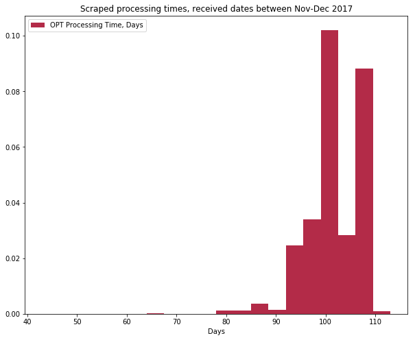
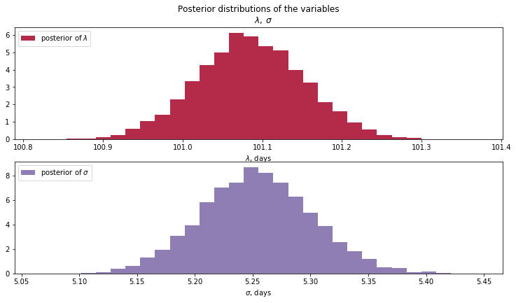

Find this project on github.
International Students in the US under the F-1 visa usually submit form I-765 to apply for work authorization from USCIS (under the OPT program). Conventional wisdom says that processing times for the work authorization can be up to 90 days. Recently (late 2017 - early 2018), the times seem to be increasing. However, I want an objective measure of whether I-765 processing times have increased recently.
I read a short book on Bayesian statistics recently (highly recommended!), and thought this would be a good chance to put what I learnt into practice. Please contact me if there are any mistakes, I am but an interested beginner :)
Why Bayesian?
If I took a frequentist approach, I could have just taken the mean of the scraped processing times and used that as my best guess of how long OPT processing times are recently. However, this approach ignores the uncertainty inherent in real-world sampling.
Methodology
- Scrape USCIS website for I-765 processing times (receipts YSC1890050000 to YSC1890070000) using Scraproxy and Scrapy.
- Filter out irrelevant rows, leaving only processed or processing cases.
- Only in the “Case Was Received” cases do we have a submission date for the OPT application. In other cases, we use the nearest two cases with submission dates to interpolate to an estimated submission date. This works because receipt numbers are chronologically increasing.
- Process using pymc3 (see below)
%matplotlib inline
from IPython.core.pylabtools import figsize
import numpy as np
from matplotlib import pyplot as plt
import scipy.stats as stats
import pymc3 as pm
import theano.tensor as ttfigsize(10, 8)
data=np.loadtxt('interpolated.csv',delimiter = ' ',dtype={'names': ('status', 'days'),'formats': ('S1', 'i4')})
filtered_data = np.array([d[1] for d in data if d[0]==b'd'])
np.random.shuffle(filtered_data)
plt.hist(filtered_data, histtype='stepfilled', bins=20, alpha=0.85,
label="OPT Processing Time, Days", color="#A60628", density=True)
plt.title("Scraped processing times, received dates between Nov-Dec 2017")
plt.legend(loc="upper left")
plt.xlabel("Days")
filtered_data.mean()
Let \(Processing \, Days\) be the random variable indicating the number of days an I-765 case needs to be processed. I assume that \(Processing \, Days \sim Normal(\mu_p, \sigma_p^{2})\). To use Bayesian inference, I need to assign prior probabilities to the different possible values of \(\mu_p\) and \(\sigma_p\) .
According to an online tracking site, the mean (self-reported) processing time is 74 days. We can model this as \(\mu_p \sim Normal(74, 20^{2})\) (where 20 is a randomly-plucked number for our standard deviation). I’m not very sure of what \(\sigma_p\) could be, so I let \(\sigma_p \sim Uniform(0,45)\) - with the broad-ranged uniform distribution reflecting my lack of strong prior belief.
with pm.Model() as model:
lambda_ = pm.Normal("lambda", mu=74, sd = 20)
sd = pm.Uniform("sd", lower=0,upper=45)
processing_time = pm.Normal("processing_time", mu=lambda_, sd=sd, observed=filtered_data)with model:
step = pm.Metropolis()
trace = pm.sample(10000, tune=5000,step=step, start=pm.find_MAP())lambda_samples = trace['lambda']
sigma_samples = trace['sd']
figsize(12.5, 10)
#histogram of the samples:
ax = plt.subplot(311)
plt.hist(lambda_samples, histtype='stepfilled', bins=30, alpha=0.85,
label="posterior of $\lambda$", color="#A60628", density=True)
plt.legend(loc="upper left")
plt.title(r"""Posterior distributions of the variables
$\lambda,\;\sigma$""")
plt.xlabel("$\lambda$, days")
ax = plt.subplot(312)
plt.hist(sigma_samples, histtype='stepfilled', bins=30, alpha=0.85,
label="posterior of $\sigma$", color="#7A68A6", density=True)
plt.legend(loc="upper left")
plt.xlabel("$\sigma$, days");
trace['lambda'].mean()
Because we have >10000 observations, the Bayesian result for \(\lambda_p\) is actually very close to the sample mean. This doesn’t mean that the Bayesian analysis was for nought though - we also get measures of uncertainty in the form of a distribution for \(\lambda_p\) and \(\sigma_p\).
Detailed Workflow
Linan’s OPT processing time post talks about how to scrape the USCIS website. My scraper uses scrapy and bs4 and can be found in BayesianOPTScraper in the project directory. You can run the scraper with scrapy crawl OPTSpider, assuming you have scrapy and scraproxy set up properly. The raw csv data looks like this:
|Case Was Received| |<p>On December 20, 2017, we received your Form I-129F, Petition for Alien Fiancé(e), Receipt Number YSCXXXXXXXXXX, and sent you the receipt notice that describes how we will process your case. Please follow the instructions in the notice. If you do not receive your receipt notice by January 19, 2018, please call Customer Service at 1-800-375-5283. If you move, go to <a href="https://egov.uscis.gov/coa/displayCOAForm.do" target="_blank">www.uscis.gov/addresschange</a> to give us your new mailing address.</p>|
|Case Was Received| |<p>On December 21, 2017, we received your Form I-765, Application for Employment Authorization, Receipt Number YSCXXXXXXXXXX, and sent you the receipt notice that describes how we will process your case. Please follow the instructions in the notice. If you do not receive your receipt notice by January 20, 2018, please call Customer Service at 1-800-375-5283. If you move, go to <a href="https://egov.uscis.gov/coa/displayCOAForm.do" target="_blank">www.uscis.gov/addresschange</a> to give us your new mailing address.</p>|Filtering and processing time interpolation is done with a quick-and-dirty script csv_filter.py. The resulting csv file looks like this:
processing 82
done 82
processing 82The first column is the status, the second is the number of days processed. The rest of the analysis is done in this notebook.
Credits
This was inspired by Linan’s OPT processing time post. The additions in my project are:
- Using Bayesian inference to infer the posterior distributions for I-765 processing times.
- Doing linear interpolation to get the OPT application date, for cases where it is not displayed.
- Using python for scraping rather than javascript.